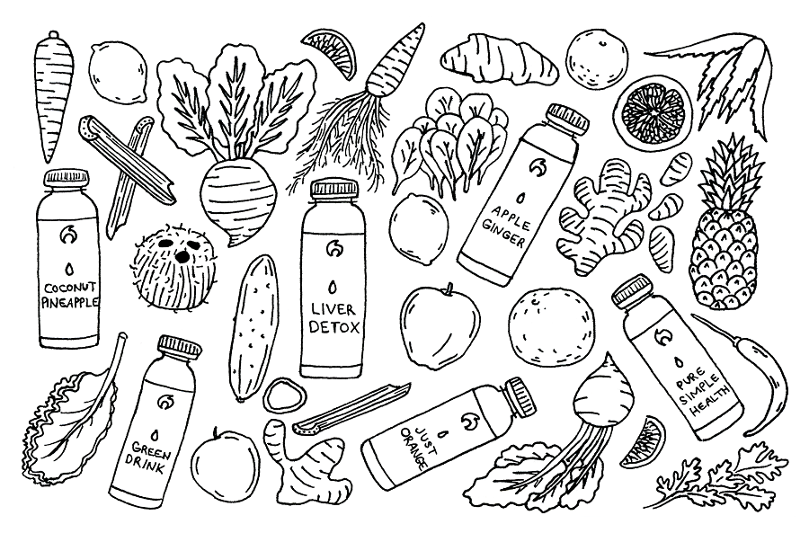

-
Firestone 3 Berry Mix
Firestone is a producer of fresh frozen fruit in the Pacific Northwest region. When they need packaging designs to show to potential buyers, they turn to me for design options.
-
Firestone Berry Mix Pitches
I like to give my clients the opportunity to choose from a few different design options. Sometimes the difference is only in the typeface, but that itself can change the tone of the overall design.
-
Healeo Organic Cold Pressed Juice
Healeo is a small juice company located in Seattle. When they approached me with ideas for a re-design of their old bottle labels, I worked with the company manager to create a clean, text-driven design with bright colors to complement the natural colors of the juices.
-
Firestone E-Mart Pouches
The design for these 300 gram sized pouches utilizes a scallloped border between the product image and the title. You can also look at it as being a sea of fruit.
-
Mixed Berry Crumbles
Frozen raspberries and blackberries will "crumble" during processing, and instead of wasting these small bits of fruit, they can be packaged and sold as a separate product. The package I designed and illustrated here is sold exclusively at Grocery Outlet stores. "Smoothies Anyone?" is an illustration I made that was inspired by this product.
-
Salmon Run 2017
This was my submission to the logo design contest for Central Washington University's 2017 annual Salmon Run. It won first place.
-
Atlas Hemp Logo Pitches
Atlas Hemp is a new start-up company that sells products made from hemp plants. These are a few logos I made for their consideration.
-
Melting Strawberry
My personal artwork is heavily influenced by the fact that most of my work clients are food and beverage companies. This strawberry is melting. I don't have much else to say about it.
-
The Sweet Scoop
Inspired by low-poly artwork, and I had the idea to glue together a collage of magazine clippings to re-create the low-poly style. I scanned the collage into Photoshop and added some more graphical elements.
-

Patterns
Line art is my favorite style of illustration, and I love patterns. A pattern made of line art objects just makes sense to me.
-
Stephanie Corneliussen
Next to line art patterns, human portraits are my favorite thing to draw. My subject here is none other than actress/model/graphic designer Stephanie Corneliussen (you may know her from USA's Mr. Robot).